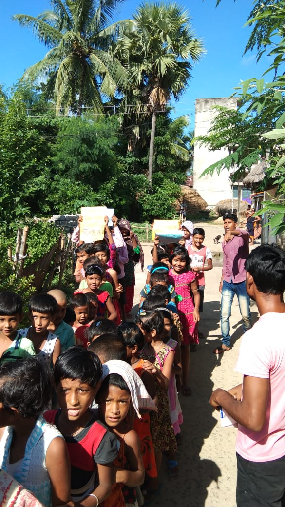

Read Foundation

India has a literacy rate of 74.04%.
While,kerala has achieved a literacy rate of 93.91%,
Bihar is the least literate state in India,with a literacy of 63.82%.
With a literacy rate of 76.26%,
above the national average of 74.04%,
as per the 2011 census
,West Bengal ranks 20th
amongst the 36 states and union territories in India
in terms of literacy rate. Purba Medinipur is the top region
by literacy rate in India with a rate of 87.7%.
The top 5 regions also include Kolkata,
North 24thPargana,howrah& Hooghly.
In this circumstances,Read foundation is a
non governmental&non profit organization for spreading education
and to reach
health services in rural areas of west Bengal & backward classes.
Why spreading education is our main & primary priority ?

Education is a pillar of every country in the world. Through education,literacy levels go high and human resources are enhanced.
Because of the needs of the education sector,most governments engage with NGOs in meeting their needs. This makes the process sustainable by bringing together all the stakeholders including civil society.
Undoubtedly,Education is the most powerful weapon which you can use to change the society as well as the world as a whole.
Few,also says “Education is the most effective way to break the cycle of poverty .
Even today more than 20 million children still remain out of school in India. (NSS-2014). They are deprived of their right to receive an education as well as their childhood.
Although,centralgovernment,through its right to education act,2009 have been making its way in enrolling and retaining children of marginalized sector. However,according to the survey of 2014,more than 60% children dropped out before completing 3rd grade & 50% of students dropped out by 11th grade.

Objectives & purposes of Read Foundation
Other special concerns of Read foundation
All kinda rural children,who are interested to join our classes,can contact us.
All kindawell wisher of west Bengal are requested to join our initiative.
Read foundation.